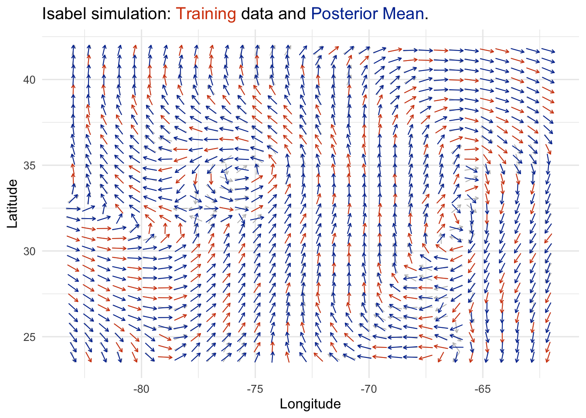

Reflection 3
In this reflection, you will identify key ideas you want people to understand about your project. How do you explain these to someone who has limited exposure to the mathematics involved?
For my project, I hope to communicate the following key ideas:
1. Gaussian processes (GPs) generalize the multivariate Gaussian distribution to “families” of functions.
- Most people have encountered the Gaussian distribution, written \(Z \sim \mathcal{N}(\mu, \sigma^2)\). When the probability (density) function is graphed, it forms a bell-shaped curve. Recall that \(\mu\) determines where the curve is centered, and \(\sigma\) determines how closely the mass of the distribution falls around \(\mu\).
- We have a related probability distribution, called the multivariate Gaussian, which we use to model vectors whose entries come from a Gaussian distribution. The multivariate Gaussian distribution is parameterized by a mean vector, and covariance matrix. We write this as
\[ \begin{align*} \mathbf{z} &= (z_1, z_2, \dots, z_N)^\top \\ \mathbf{z} &\sim \mathcal{N}_N (\mu, \mathbf{\Sigma}) \\ z_i &\sim \mathcal{N}(\mu_i, \mathbf{\Sigma}_{i,i}) \\ \mu &= (\mathbb{E}(z_1), \mathbb{E}(z_2), \dots, \mathbb{E}(z_N))^\top \\ \mathbf{\Sigma} &= cov(\mathbf{z}) = \mathbb{E}[(\mathbf{z} - \mu)(\mathbf{z} - \mu)^\top] \end{align*} \]
Multivariate Gaussian distributions are used to model vectors of a fixed size (dimension). However, we can consider vectors of any size, by introducing the idea of a Gaussian Process (GP).
Formally, a Gaussian Process is defined as an uncountably infinite collection of random variables, of which any finite sample from the process is described by a multivariate Gaussian distribution. In this way, you could liken GPs as a way to describe probability distributions over functions (where functions are “infinitely tall” vectors) (Williams and Rasmussen 2006). We write this as \(f \sim \mathcal{GP}(m, k)\) where \(m\) and \(k\) are mean and covariance (kernel) functions.
2. Gaussian processes are useful in the context of regression problems.
This perspective is helpful in the context of regression problems, in which a researcher is wants to model the relationship \(f\) between inputs and outputs, typically written \(\mathbf{y} = f(\mathbf{x})\). Here, \(\mathbf{x}\) and \(\mathbf{y}\) are vectors representing data collected by the researcher.
If we assume \(f\) comes from a Gaussian process, we can choose an appropriate covariance function \(k\) that induces characteristics we assume \(f\) has. For example, we might want a kernel that results in smooth functions. Other kernels can be chosen to induce periodic behavior (think sine/cosine functions), or linearity.
This is attractive because we frequently encounter problems where the relationship \(f\) is complicated and nonlinear.
3. We can use GPs to model functions that have more than one dimension.
It’s common for researchers and scientists to be interested in a statistical outcome that’s univariate. That is, we might want to predict the value of \(y_*\) (a scalar), given that we’ve collected \((x_1, y_1), \dots, (x_N, y_N)\).
However, not all quantities that interest us are scalars. We might be interested in modeling phenomena that are best described by vectors. An example of this is wind velocity, which has two components: direction and magnitude at a measured point in space. This means rather than a single \(y_*\), we might have a vector: \(\mathbf{y}_* = (y_1, y_2)^\top\).
Rather than building a model for each component, it’s likely that our analysis will benefit from considering both components together. If the components of our target vectors aren’t independent, we could leverage that information to improve our predictions.
This idea is translated smoothly within the framework of Gaussian Process regression. A simple approach (referred to as the Intrinsic Corregionalization Model, ICM) (Alvarez et al. 2012) is to construct a similarity matrix that summarizes the relationships between our outcome components, and combine it with our inputs.

Data from the R Graphics Cookbook (Chang 2018).
Question – Think about yourself as a freshman: what would you’ve found interesting or impressive about your project?
In writing up this outline, I imagined persons similar to myself when I started my math program. When I began my second degree, I had disciplinary knowledge from the social sciences and some training in statistics, but wanted greater confidence in my understanding of the “nuts and bolts”. In the overview, I wanted to connect existing knowledge from initial statistics coursework to the much broader context of multivariate statistics.
Additionally, I wanted to illustrate how Gaussian process regression (GPR) can be used to model complex phenomena. My example in the first figure hopefully helps demonstrate this. Even with just a few points, we’re able to get a decent fit to the target function. Lastly, I think the case of a 2-dimensional outcome variable is very interesting. Due to their simplicity, most class examples teaching regression focus on scalar outcomes, and this is appropriate for learning. However, many things we would want to learn about in the world aren’t neatly quantified as scalars. GPR is very flexible, and it can be useful for all kinds of modeling problems.
References
Alvarez, Mauricio A, Lorenzo Rosasco, Neil D Lawrence, et al. 2012. “Kernels for Vector-Valued Functions: A Review.” Foundations and Trends in Machine Learning 4 (3): 195–266.
Chang, Winston. 2018. R Graphics Cookbook: Practical Recipes for Visualizing Data. O’Reilly Media.
Williams, Christopher KI, and Carl Edward Rasmussen. 2006. Gaussian Processes for Machine Learning. Vol. 2. 3. MIT press Cambridge, MA.